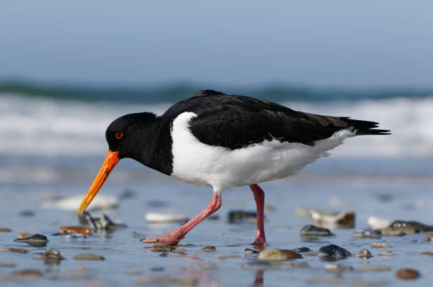
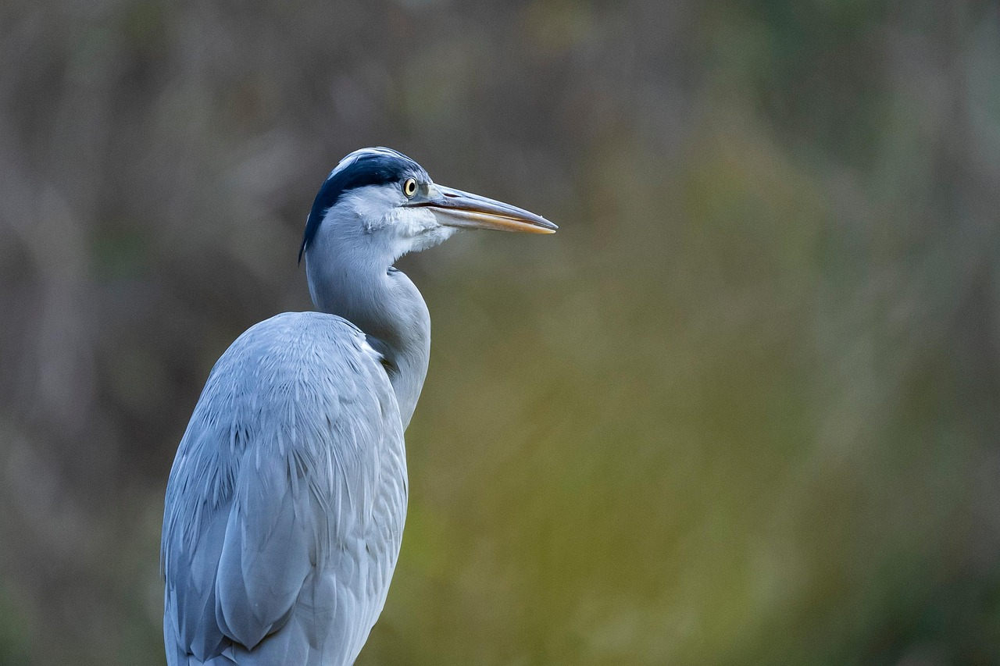
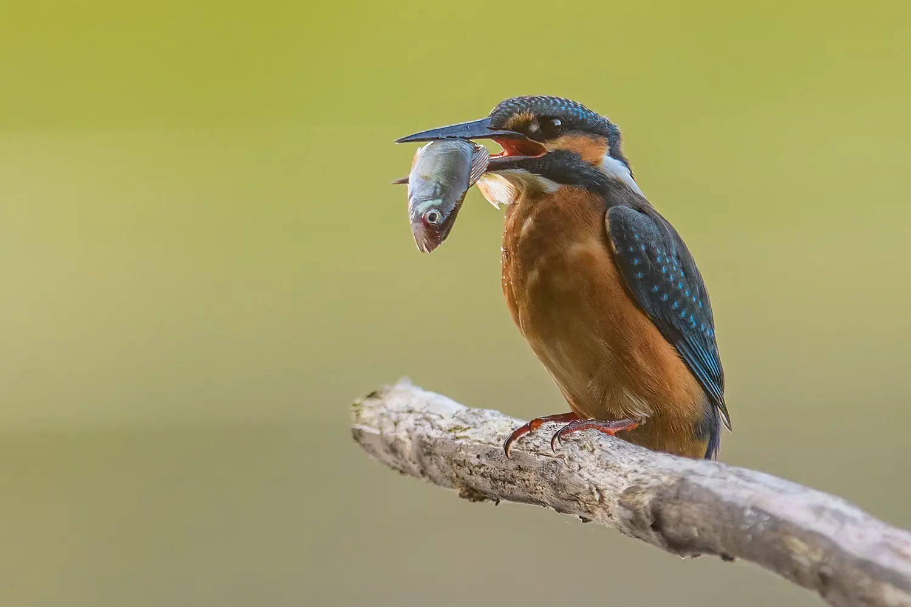
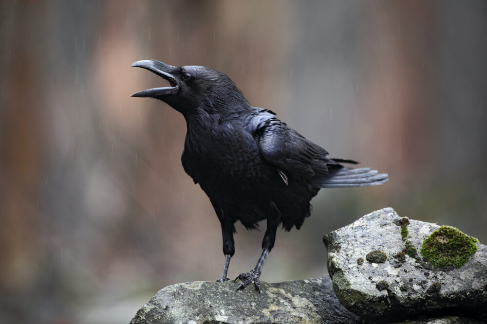

Täältä löydät tietoa parhaista lintulajeista, vinkkejä lintubongailuun sekä tietoa lintujen suojelusta. Seikkaile eri sivuilla ja opi uutta!

Kaikki alkoi perheeni kesämökillä, kun olin vielä pieni lapsi. Mökki sijaitsee Valkeakoskella, lähellä Tamperetta. Tontti on suuri, ympärillä on metsää, peltoa ja tietenkin Vanajavesi. Kun minut, siskoni ja serkukseni laitettiin päiväunille, kaikki saivat valita yhden kirjan unisaduksi. Muut valitsivat satukirjat, minä valitsin suuren lintukirjan. Vaari luki kuuliaisesti jokaiselle valitut sadut, ja oli selkeästi ylpeä minun valinnastani. Päiväunien jälkeen, lähdimme kiikareiden kanssa etsimään kirjan lintuja. Siitä kaikki siis alkoi.
Rakkaus lintuja kohtaan on säilynyt läsnä elämässäni aina. Vilkkaalla ja äänekkäällä pääkaupunkiseudulla asuessa lintuja ei pääse näkemään yhtä paljon. Sen vuoksi jokainen reissu mökille, sukulaisten luokse Itä-Suomeen tai Lappiin on tuntunut aina vain paremmalta, kun muistaa, minkälainen lintumaailma Suomessa todella on.
Tänä päivänä kuulun Tringaan, Helsingin seudun lintuyhdistykseen, jonka kautta pääsen osallistumaan linturetkille sekä erilaisiin tapahtumiin. Kavereiden kanssa ulkona ollessa saatan aina jäädä porukasta jälkeen, kun minun on pakko saada äänitettyä meriharakan ääntä, jonka satuin kuulemaan. Lintujen seuraaminen ja bongailu tuovat minulle valtavasti iloa ja auttavat rentoutumaan.
Tämä sivusto on tapani kertoa muillekin, kuinka ihmeellisiä linnut ovat. Toivottavasti se innostaa bongailemaan, kuuntelemaan, ihailemaan ja suojelemaan.
— Aino Palomäki



